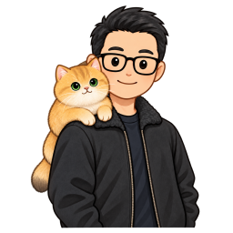
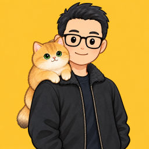
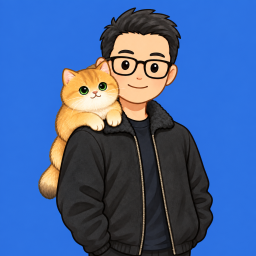

正方形 · 透明底
1254 × 1254 PNG · 含透明通道
正方形与长方形，各提供透明底、黄色背景和蓝色背景。点击缩略预览查看原尺寸大图；棋盘格只用于网页说明透明度，不在 PNG 内。

1254 × 1254 PNG · 含透明通道
1672 × 941 PNG · 含透明通道

1254 × 1254 PNG
1672 × 941 PNG

1254 × 1254 PNG
1672 × 941 PNG
完整“杰哥 AI 实验室”组合配最长英文，保持中英左右对齐。空间变小后，选中档独立英文；仅使用英文时选 Jie Lab。

笛卡尔叶形线回环表达上升、回退、再实验和价值实现。页面只呈现线条与节点。
下载回环 SVG · 查看动效